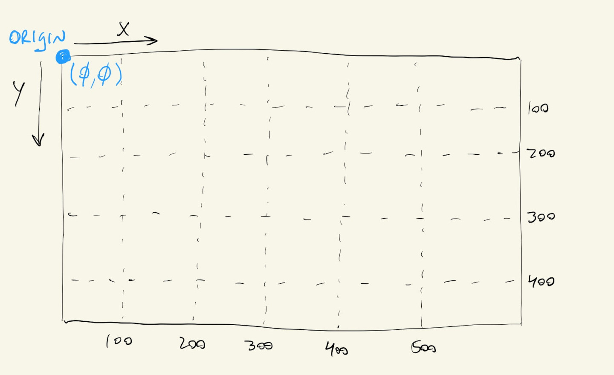
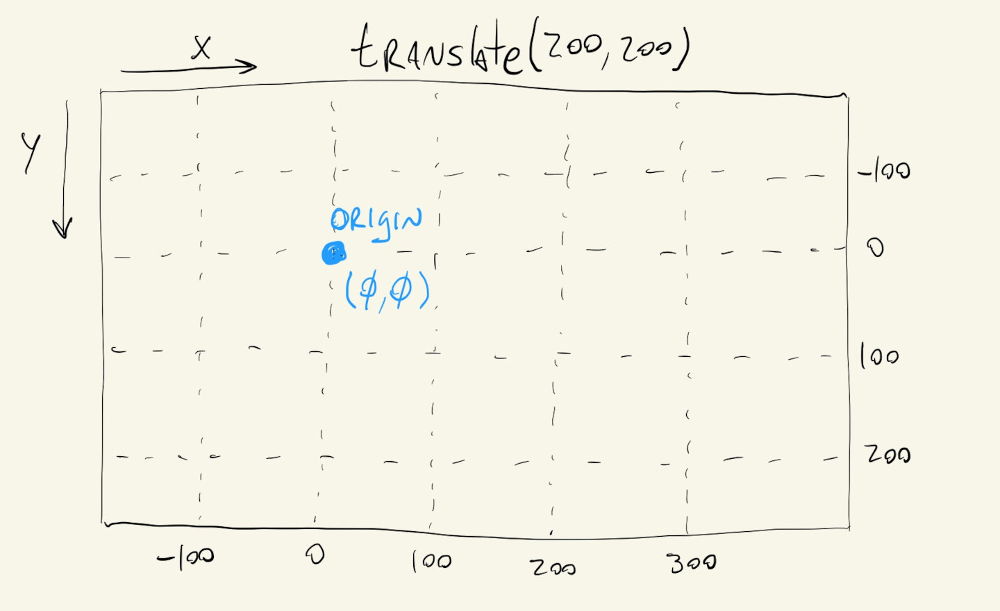
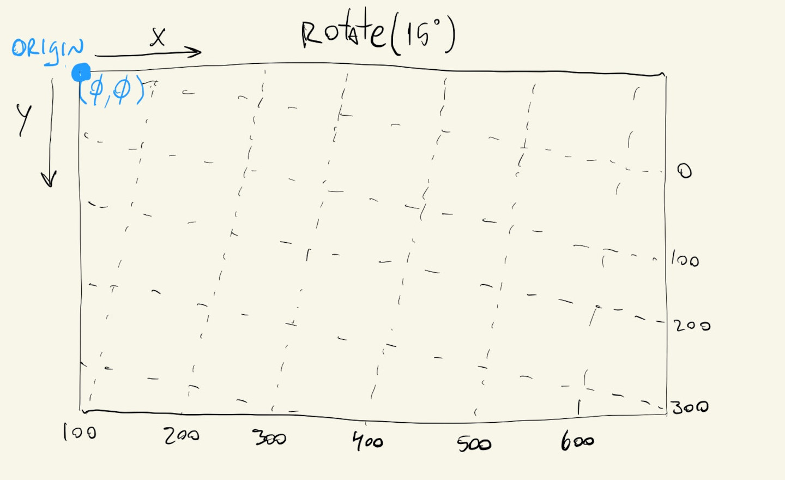

Now that we’ve covered the basics of drawing shapes in p5.js, let’s take a look a more advanced constructs for placing objects on our canvas.
Let’s say we have a collection of simple shapes that make up a more complicated shape, like a star, a smiley face or a heart.
We can draw this at a particular location by specifying all of the coordinates of our basic shapes:
If we want to draw this shape at a different location we’ll have to manually recompute all of the x and y coordinates of the basic shapes:
We can use variables, which helps a bit:
These all work, but there’s another way to do this, which might seem more difficult at first, but once we get used to it, will allow us to perform other kinds of transformations on our shapes, like rotations and scaling.
Instead of changing the x and y locations of where we want to draw our shape on our canvas, we can change the location of our canvas’ origin. We’ll always draw our shapes at the \((0, 0)\) location, but we’ll change where that location is in our canvas. We can use the p5.js function translate() to change our origin location.
The code that actually draws the heart is exactly the same. We just changed where on our canvas the \((0, 0)\) reference point is.


One thing to note is that calls to translate() are cumulative and permanent, so calling translate(150, 150) twice will actually move the origin to \((300, 300)\) and everything that is drawn afterwards will use the new origin location. This is just like when we call fill(0) and everything that is drawn afterwards gets filled in black.
We can always undo our translations by using negative values, so calling translate(150, 150) followed by translate(-150, -150) will move the origin back to the top-left corner of our canvas.
An easier way to do this is to use the push() and pop() functions. When we can push() we are telling p5.js to pay extra close attention to our transformations and keep track of them for us. After we are done drawing, we call pop(), which now tells p5.js to undo all of the transformations made after push(). Or, in other words, the push() function tells p5.js to save the current state of our transformations, and the pop() function tells p5.js to go back to that state.
So instead of doing this to recover our initial origin:
translate(150, 150);
// draw shapes
translate(-150, -150);
We can do this:
push();
translate(150, 150);
// draw shapes
pop();
It’s good practice to always wrap our translations and transformations with calls to push() and pop(). This way we can always recover the initial location of our origin.
The other advantage of using translate() with push()/pop() is that it’s the easiest way to rotate our custom shapes.
The p5.js rotate() function rotates our canvas around its origin.
If we want to draw two hearts rotated by \(45^{\circ}\) at \((100, 100)\) and \((250, 250)\), we might try:
rotate(PI / 4);
translate(100, 100);
// draw first heart
translate(150, 150);
// draw second heart
But this might not have the desired effect, since rotate() doesn’t rotate our shapes, but the whole canvas!
This is important to remember: all of these transformation functions aren’t changing our shapes, but the underlying canvas, relative to its current origin.

So, if we want to draw a rotated heart at \((100, 100)\) and another at \((250, 250)\), we first translate our origin, rotate, draw our shapes, undo all of the transformations, and then repeat at the different location:
push();
translate(100, 100);
rotate(PI / 4);
// draw first heart
pop();
push();
translate(250, 250);
rotate(PI / 8);
// draw second heart
pop();
Once we get used to how translate(), push() and pop() work we can even use them in conjunction with scale() to change the size of our objects without having to recalculate new coordinates and lengths for our basic shapes.
Again, we just have to remember that scale() is actually scaling our canvas and not our shapes, and that it works relative to the origin, where it grows (or shrinks) our shapes away from (or towards) the origin. Similar to how we used rotate(), if we want to change the size of shapes that are drawn in different places of our canvas, we first have to translate() to those locations, scale() the canvas and then draw:
push();
translate(100, 100);
scale(0.6);
// draw small heart
pop();
push();
translate(250, 250);
scale(3.0);
// draw big heart
pop();
And since we’re using push() and pop() we can easily combine calls to scale() and rotate().